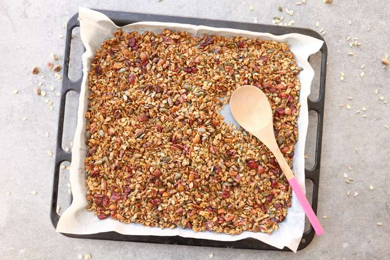

גרנולה ביתית
אפרת ליכטנשטט

כבר אי אפשר לעבור ליד שום חנות
(כולל מכולות, חנויות טבע,קופיקס,חנויות פרחים ואפילו תחנות דלק)
מבלי להתנגש בשולחן מכוסה ערמות של צלופן

הביטו במבט בוחן:
מתחת להרי הצלופן המקווצ׳ץ׳ והסרטים המוזהבים
ישנם קרטונים צבעוניים
חלקם אולי משולשים
מה צריך?
- 3 כוסות שיבולת שועל שלמה (לא קוואקר להכנה מהירה)
- ⅓ כפית מלח חשוב מאד!
- ½ כוס גרעיני חמניה
- ½ כוס גרעיני דלעת
- ½ כוס שקדים קצוצים גס
- ½ כוס אגוזי פקאן קצוצים גס
- ½ כוס פיסטוקים קצוצים גס
- ¼ כוס דבש
- ¼ כוס סירופ מייפל (אפשר גם להשתמש רק בדבש או רק במייפל (לטבעונים)
- ¼ כוס שמן זית עדין/שמן רגיל
- ¼ כוס חמוציות > מוסיפים בסוף האפייה

הוראות הכנה
- 3 מחממים תנור ל-160 מעלות טורבו ומניחים נייר אפייה בתבנית תנור גדולה.
- ⅓ בקערה גדולה מערבבים היטב את כל החומרים (קודם את היבשים ואח״כ מוסיפים את הרטובים). מעבירים את התערובת לתבנית ומשטחים אותה לגובה אחיד.
- אופים את הגרנולה 40-50*** דקות כאשר כל 10 דקות פותחים את התנור, מוציאים את התבנית טיפה החוצה ומערבבים היטב עם כף עץ. זה חשוב מאד כדי שכל החומרים יאפו במידה שווה. כשהשיבולת שועל מזהיבה והאגוזים שחומים וריחניים – הגרנולה מוכנה (תטעמו!).
- מוציאים את הגרנולה מהתנור ונותנים לה להתקרר לגמרי, מערבבים אותה מידי פעם כדי שלא תדבק ותהפוך לגוש. (במיוחד אם השתמשתם בדבש)
- *** שימו לב לא לשרוף את הגרנולה. אם התנור שלכם חם מדי היא עלולה להשרף ולכן לקראת הסוף מומלץ להיות ליד התנור ולהשגיח. יש תנורים שבהם הגרנולה מוכנה תוך 25 דקות.
הערות
אחרי שהגרנולה התקררה תוכלו לארוז אותה בצנצנות החמודות שאתם אוספים באובססיביות, או בשקיות צלופן קטנות עם פתקים מושלמים מאיקאה.
ואל תשכחו להשאיר צנצנת אחת לעצמכם ולהתפנק עם יוגורט, פירות, ופרחים אכילים, ברור.